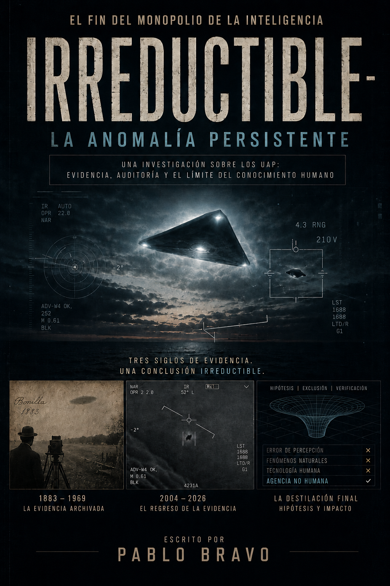

IRREDUCTIBLE
La investigación forense que convierte la mayor desclasificación de la historia en un argumento que ningún escéptico puede descartar.
(Y el método de eliminación sistemática que hace que la conversación deje de depender de lo que tú crees — y empiece a depender de lo que la física y los radares pueden o no pueden explicar.)
Tienes los datos oficiales frente a tus ojos. 222 archivos desclasificados. Videos autenticados por el Pentágono. Telemetría militar sin explicación.
Y la última vez que intentaste abrir este debate, alguien en la mesa te miró como si hubieras dicho que la tierra es plana.
No es ignorancia de tu parte. Es que estabas debatiendo con fe contra personas armadas con condescendencia. Eso cambia ahora.
Fraudes. Charlatanes. Documentales absurdos. Testigos poco fiables. Pseudociencia.
Entonces ocurrió algo inesperado.
El Pentágono autenticó videos capturados por pilotos de combate. El Congreso exigió informes oficiales. Radares militares comenzaron a registrar maniobras imposibles. Y gobiernos que pasaron décadas ridiculizando el fenómeno tuvieron que admitir públicamente una verdad incómoda:
existen objetos que detectamos, rastreamos, grabamos, y todavía no podemos explicar.
IRREDUCTIBLE no es un libro sobre creencias.
Es una investigación construida como una auditoría forense.
Un proceso de eliminación sistemática que recorre:
- archivos históricos,
- casos militares desclasificados,
- evidencia multiespectral,
- física de sensores,
- informes de inteligencia,
- y testimonios corroborados instrumentalmente.
La pregunta ya no es: "¿Existen los OVNIs?"
La pregunta es: ¿Qué queda cuando las explicaciones convencionales empiezan a agotarse?
Enviamos a México, Argentina, Chile, Colombia, EE.UU. y toda Latinoamérica. El costo de envío se calcula automáticamente según tu país.

Este libro fue escrito para personas que NO querían creer.
Ese detalle importa.
Porque la mayoría de los libros sobre OVNIs intentan convencerte desde la primera página.
IRREDUCTIBLE hace lo contrario.
Empieza descartando.
Descarta:
- errores de percepción,
- contaminación cultural,
- explicaciones meteorológicas,
- sesgos cognitivos,
- tecnología humana convencional,
- y décadas de ruido pseudocientífico.
Y precisamente por eso el libro se vuelve inquietante.
Porque cuando eliminas el ruido… queda algo.
Algo persistente.
Algo que atraviesa:
- civilizaciones,
- registros históricos,
- radares,
- pilotos,
- sensores infrarrojos,
- gobiernos,
- y décadas de análisis.
El método del libro
La mayoría de los libros sobre el fenómeno UAP fallan por una razón:
Confunden especulación con investigación. IRREDUCTIBLE trabaja exactamente al revés.
No parte de una conclusión. Parte de evidencia verificable.
Explicaciones convencionales evaluadas seriamente
No caricaturas fáciles. Hipótesis reales sometidas a contraste.
Física de sensores y convergencia instrumental
Radar + visual + infrarrojo + telemetría.
Análisis de inteligencia gubernamental
Informes oficiales, documentos desclasificados y evolución institucional.
El método del "embudo de eliminación"
La columna vertebral intelectual del libro.
AUTORIDAD Y CREDIBILIDAD
Lo que hace poderoso este libro no es la conclusión. Es el método.
El manuscrito fue construido utilizando:
- documentación histórica verificable,
- análisis comparativo de casos,
- archivos desclasificados,
- informes gubernamentales,
- convergencia instrumental,
- física de sensores,
- y evaluación competitiva de hipótesis.
En lugar de pedirte que creas… el libro te invita a observar el proceso de eliminación. Y sacar tus propias conclusiones.
Casos históricos
Casos históricos auditados con metodología documental
Desde Ezequiel y Núremberg hasta José Bonilla y los Foo Fighters.
Dentro de IRREDUCTIBLE descubrirás:
- La razón por la que el fenómeno aparece documentado siglos antes de la aviación moderna.
- Qué tienen en común Ezequiel, Núremberg y los sistemas Aegis del siglo XXI.
- El patrón histórico que atraviesa civilizaciones sin contacto entre sí.

Nimitz / evidencia instrumental
El caso que cambió todo
14 de noviembre de 2004. Costa de California. El grupo de combate USS Nimitz detecta objetos descendiendo desde 24.000 metros hasta nivel del mar en segundos. Sin firma térmica. Sin alas. Sin sistema de propulsión visible. Los radares Aegis los rastrean. Pilotos de élite los observan. Sensores infrarrojos los registran. Y veinte años después… la explicación oficial sigue sin existir.
Ese es el corazón de IRREDUCTIBLE. No un avistamiento aislado. Sino el momento en que el fenómeno dejó de depender exclusivamente de testimonios humanos… …y empezó a quedar registrado por instrumentos militares avanzados.
Evidencia militar moderna
Nimitz, Tic Tac, Gimbal, GoFast, Teherán, Rendlesham y más.
- > Por qué el Pentágono pasó de ridiculizar el fenómeno a autenticar videos oficiales.
- > El detalle técnico del caso Nimitz que hace colapsar las explicaciones convencionales.
- > Cómo funcionan realmente los radares militares que detectaron los objetos.
- > Cómo la convergencia radar + visual + infrarrojo cambia completamente el debate.
El embudo de eliminación
IRREDUCTIBLE es un método de eliminación sistemática. Empieza descartando.
Descarta:
Y precisamente por eso el libro se vuelve inquietante. Porque cuando eliminas el ruido… queda algo. Algo persistente.
> OUTPUT_TERMINAL: descubrimientos
- 01. Por qué la hipótesis de "tecnología secreta humana" se vuelve cada vez más difícil de sostener.
- 02. El error intelectual que hace que la mayoría descarte el fenómeno demasiado rápido.
- 03. Y la pregunta que empieza a emerger cuando todas las demás explicaciones pierden fuerza.
Para quién es
+ Este libro es para ti si:
- Te interesan los límites de la ciencia y la evidencia.
- Disfrutas investigaciones rigurrosas y bien documentadas.
- Buscas análisis serios lejos del sensacionalismo.
- Te interesa inteligencia militar, defensa y tecnología.
- Te obsesionan las preguntas difíciles.
- Eres escéptico… pero intelectualmente honesto.
- Tienes acceso a las desclasificaciones de 2026 pero cada vez que citas un dato oficial, alguien lo descarta como "cortina de humo política" o "ilusión óptica". Necesitas un método, no más evidencia.
- Estás cansado de debatir con entusiasmo y perder por falta de estructura. Quieres un proceso de eliminación tan riguroso que el escéptico no tenga dónde pararse.
× Este libro NO es para ti si:
- Buscas fantasía esotérica.
- Quieres conspiraciones fáciles.
- Necesitas respuestas absolutas.
- Prefieres certezas cómodas.
-
IRREDUCTIBLE no promete certezas. Promete algo mucho más raro: rigor.
EL ARMARIO CÓSMICO
Por qué la mayoría calla — y por qué no eres el único.
Un estudio de la Universidad de Harvard sobre 6.000 personas con alto nivel educativo reveló algo que probablemente ya intuías:
El 67% estima en privado que existe inteligencia exótica operando en la Tierra.
Pero ese mismo grupo cree que solo el 21% de sus pares comparte esa convicción.
Brecha real: 46 puntos porcentuales de silencio colectivo por miedo al ridículo.
No eres excéntrico. No estás solo. Estás atrapado en el Armario Cósmico: el fenómeno psicológico por el cual la mayoría calla mientras cada individuo asume que es minoría.
Irreductible es la llave.
No porque te convenza de algo que ya sabes. Sino porque te entrega el método de eliminación sistemática que hace que la conversación deje de depender de lo que tú crees — y empiece a depender de lo que la física, los radares y la historia militar pueden o no pueden explicar.
Implicaciones filosóficas
EL CAMBIO DE PARADIGMA
Este libro plantea una idea profundamente incómoda:
"Tal vez la humanidad está enfrentando su segundo momento copernicano."
El primero ocurrió cuando descubrimos que la Tierra no era el centro del universo.
El segundo podría ocurrir cuando descubramos que no poseemos el monopolio de la inteligencia. No en otra galaxia. Aquí. En nuestro entorno inmediato.
Lo inquietante no es que existan objetos sin explicación. La historia de la ciencia está llena de anomalías temporales. Lo inquietante es otra cosa. Que después de décadas de:
- satélites,
- radares,
- sensores avanzados,
- pilotos militares,
- análisis de inteligencia,
- y vigilancia aérea global…
la anomalía siga ahí. Persistente. Irreductible.
GARANTÍA DE 30 DÍAS — SIN CONDICIONES
Lee Irreductible. Recorre el proceso de eliminación completo. Evalúa la evidencia histórica, la convergencia instrumental y el análisis de inteligencia con el mismo rigor que el libro te pide aplicar.
Si después de leerlo consideras que el método no es lo que esta página promete — una auditoría forense construida sobre evidencia verificable, no especulación — escríbeme. Te devuelvo cada centavo. Sin formularios. Sin preguntas. Sin burocracia.
Puedo hacer esto porque confío en el trabajo. El riesgo es mío, no tuyo.
— Pablo Bravo | Autor de Irreductible
STATUS: GUARANTEE_ACTIVE // 30_DAYS // NO_CONDITIONS
IRREDUCTIBLE
La investigación forense que convierte la mayor desclasificación de la historia en un argumento que ningún escéptico puede descartar.
Porque después de décadas de radares, pilotos militares y sistemas de detección avanzada…
la anomalía sigue ahí.
Persistente.
Irreductible.
Léelo y decide por ti mismo qué explicación sobrevive cuando todas las demás empiezan a caer.
Enviamos a México, Argentina, Chile, Colombia, EE.UU. y toda Latinoamérica. El costo de envío se calcula automáticamente según tu país.
ESCRITO POR
PABLO BRAVO